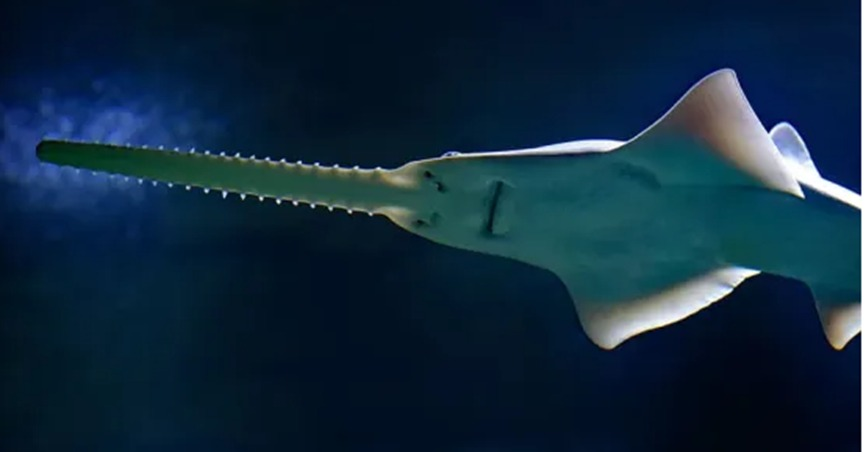

Esta especie de pez se caracteriza por un cuerpo aplanado, unas aletas pectorales que recuerdan a
unas alas, una boca localizada debajo y un hocico muy largo y estrecho como
una sierra, de ahí su nombre. El pez sierra puede
alcanzar una longitud media de unos 600 cm como máximo en su estadio adulto, mientras que cuando nacen miden 60 cm.
Típicamente habita en los primeros 10 m de aguas tanto dulces como marinas. Esta especie no solo se
encuentra en peligro crítico de extinción en El Salvador, sino en todo el planeta.
Nombre científico: Pristis pectinata.
Habitad: Agua dulce, salobre y marina.
Especie: Pez.
Origen: África, Australia y el caribe.
Descripción: El pez sierra común alguna vez nadó en aguas cálidas en todo el mundo.